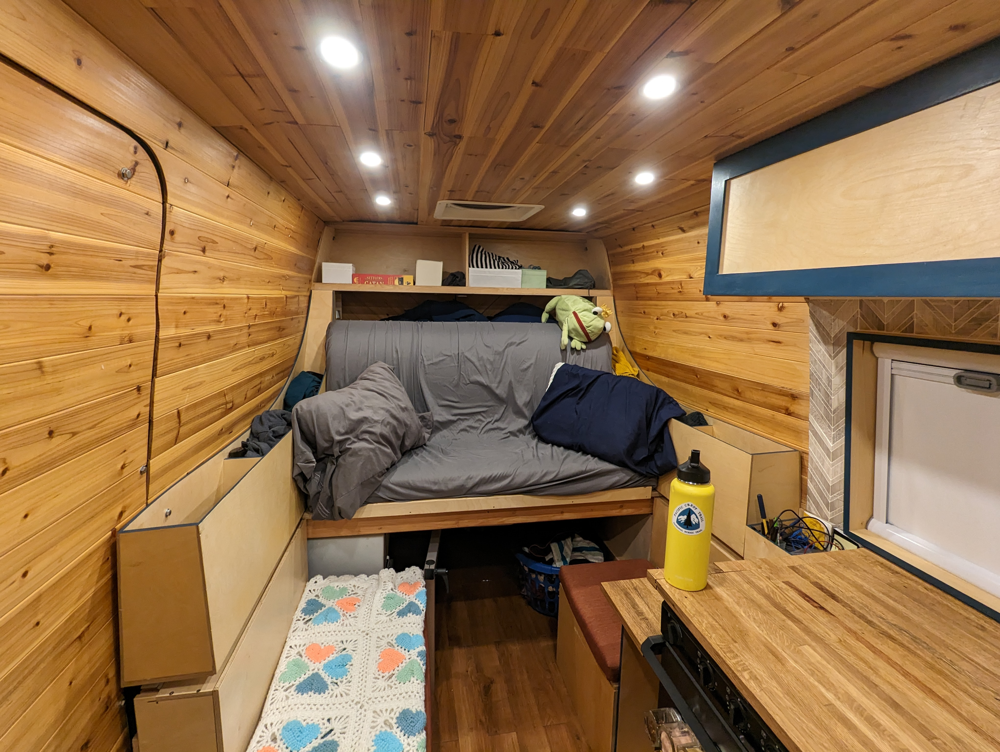
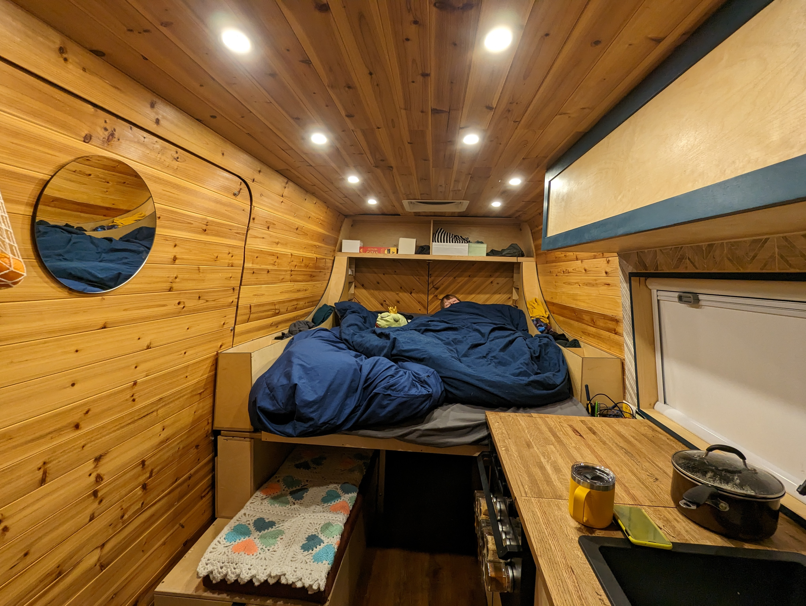
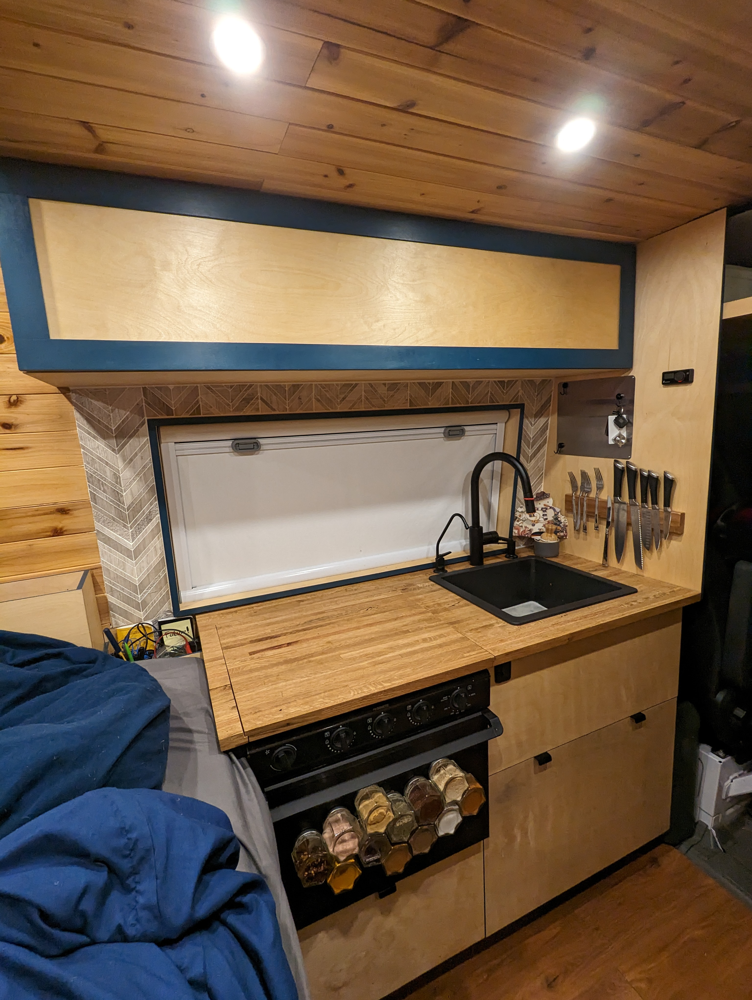
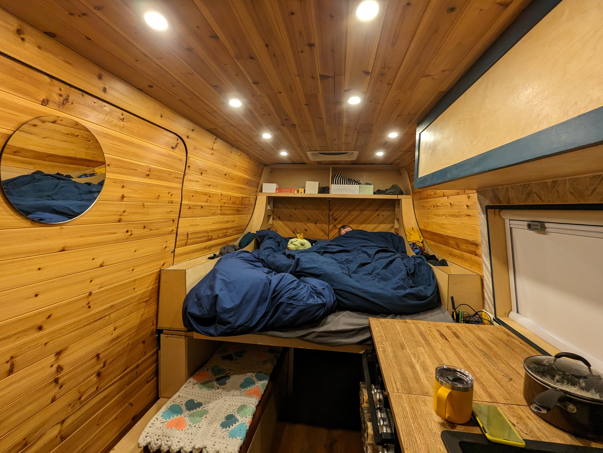
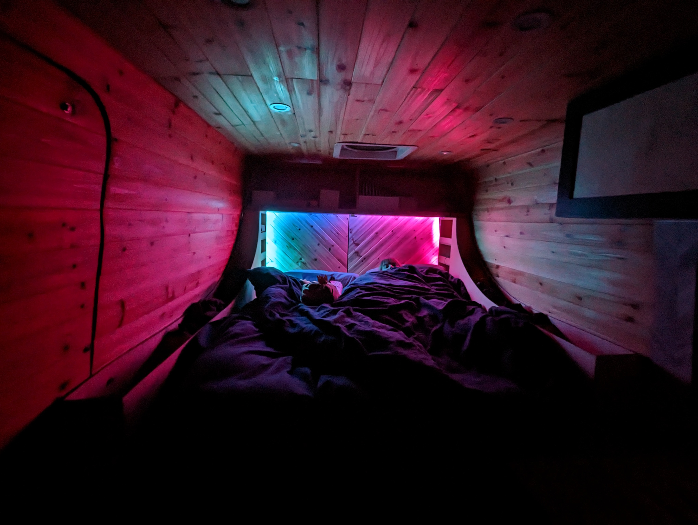

The Van
A 2015 Sprinter 2500 high-roof, chosen for its reliability, parts availability, and room to build.

The Build
Stripped to bare metal and rebuilt from the ground up — insulation, framing, electrical, plumbing, and finish work done by hand.

Power System
Solar and battery setup sized for full off-grid capability — running lights, refrigeration, devices, and more without shore power.

Water System
Onboard fresh and grey water with a pressurized pump system, designed for efficiency and easy refilling in the field.

Living Space
Compact and functional — a bed, kitchen, storage, and workspace all within reach, built to feel like home anywhere.

On the Road
Built for remote wilderness stays. Park it, shut it off, and stay as long as the food and water hold out.